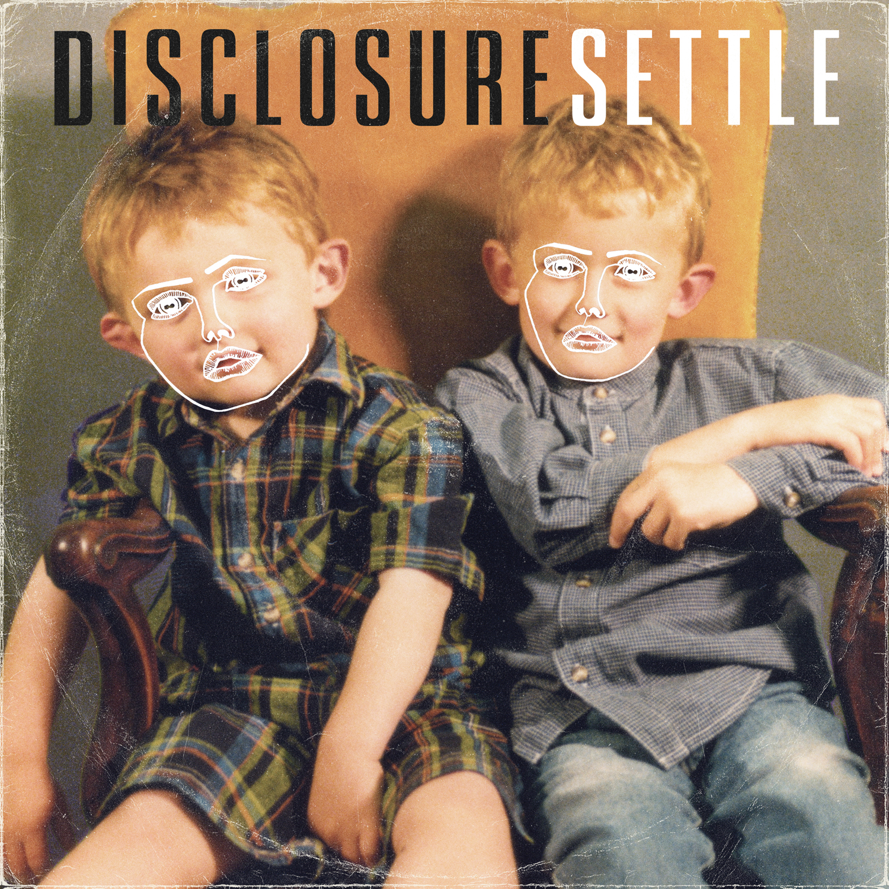
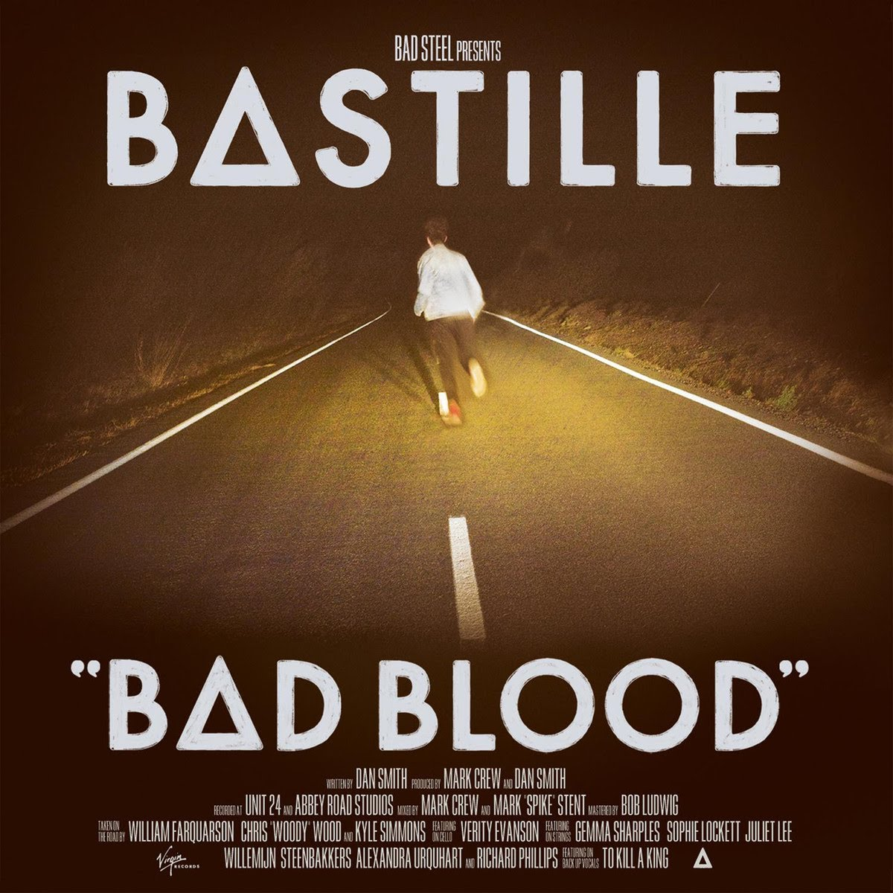
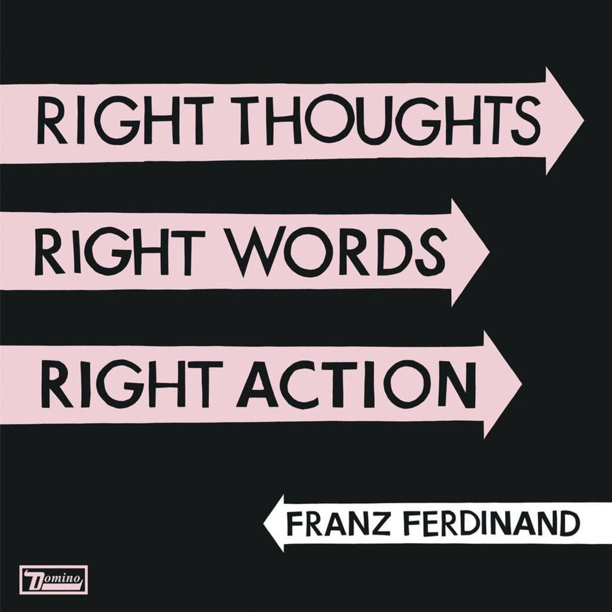
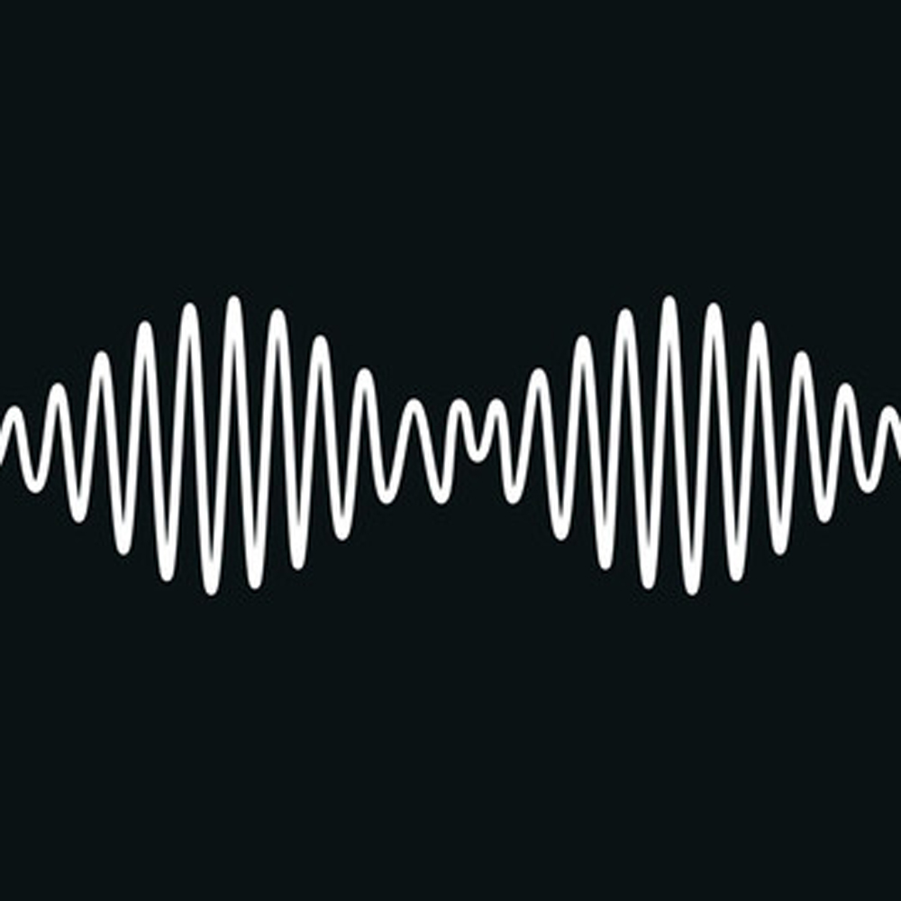
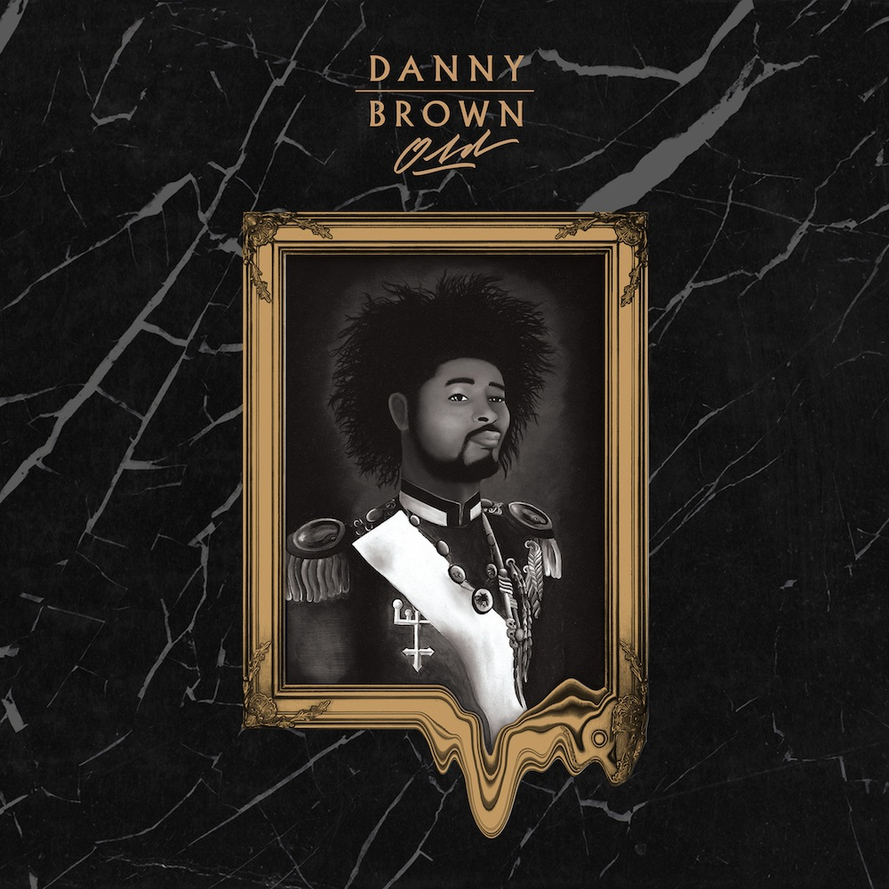
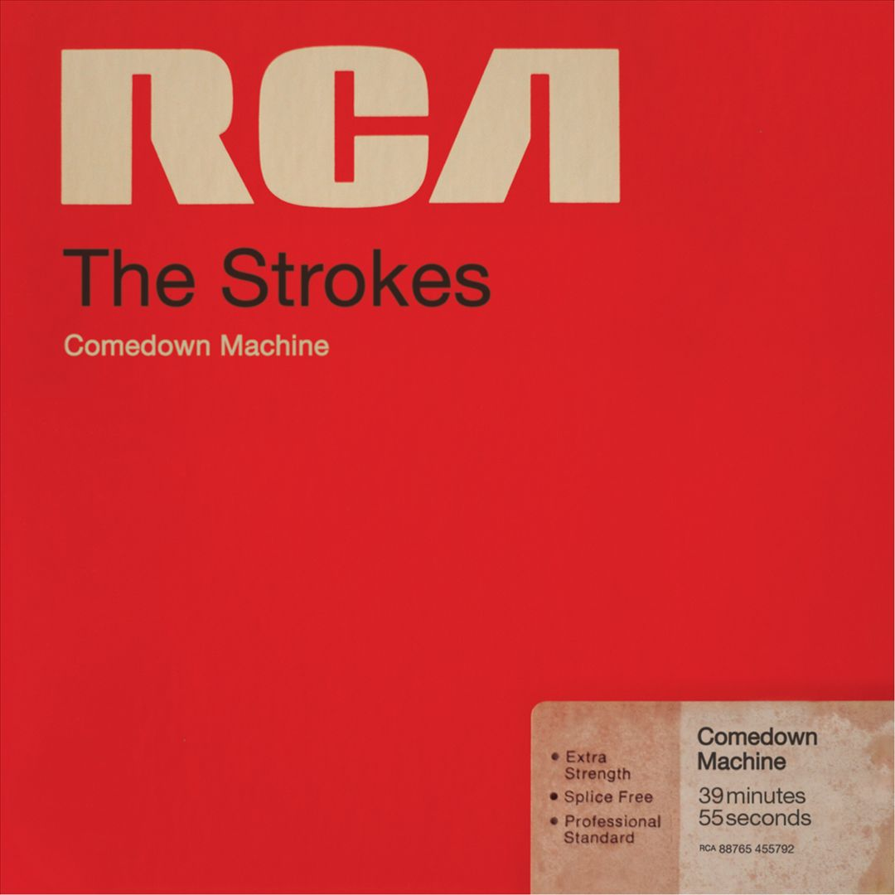

3. Latch
7. Icarus
11. Laura Palmer
3. One for the Road
16. Handstand
Kush Coma
4. Welcome to Japan
11. Call it Fate, Call it Karma
9. NaNa

11. Fragments of Time
12. Doin' it Right
7. Digital Lion

A3. Flashbulb Eyes
A5. Normal Person
B4. Porno
| Rank | Album Cover | Album Name | Artist | Favorite Track(s) |
| 10 |  | Settle | Disclosure | 2. When a Fire Starts to Burn 3. Latch |
| 9 |  | Bad Blood | Bastille | 2. Things We Lost in the Fire 7. Icarus 11. Laura Palmer |
| 8 |  | Right Thoughts, Right Words, Right Action | Franz Ferdinand | 2. Evil Eye |
| 7 |  | AM | Arctic Monkeys | 1. Do I Wanna Know 3. One for the Road |
| 6 |  | Old (Explicit) | Danny Brown | 13. Dip 16. Handstand Kush Coma |
| 5 |  | Comedown Machine | The Strokes | 3. One Way Trigger 4. Welcome to Japan 11. Call it Fate, Call it Karma |
| 4 | Acid Rap (Explicit) | Chance the Rapper | 1. Good Ass Intro 9. NaNa |
|
| 3 | |
Random Access Memories | Daft Punk | 3. Giorgio by Moroder 11. Fragments of Time 12. Doin' it Right |
| 2 | Overgrown | James Blake | 5. Retrograde 7. Digital Lion |
|
| 1 | |
Reflektor | The Arcade Fire | A1. Reflektor A3. Flashbulb Eyes A5. Normal Person B4. Porno |